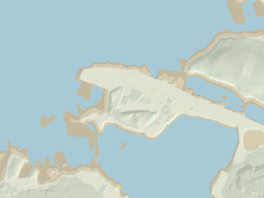

Today and the next three days
When is there water at the steps?
Westport Bay is shallow and the shelf in front of the Point dries for most of every tide, so the question is never if but when. Pick what you're after:
Depth of water at the foot of the steps, from midnight to midnight. Shaded: the times there is at least the depth you picked. Grey bands: night. Tap or drag the chart for any time.
The next four days
What the words mean. Depth of water at the foot of the steps, set against someone 1.72 m tall using standard body proportionsB. Wade: 0.3 m or more, up the shins. Dip: 0.7 m or more, thigh-deep; sit down and you're in to the shoulders. Swim: 1 m or more, hip-deep and up, enough for breaststroke with your knees clear of the stones. These are our rules of thumb, not anyone's regulations. Further out from the steps the shelf is a little lower, so there is a bit more water than this.
Finding the steps

Follow the Quay west past the pet-food factory to the free car park at the very tip of Roman Islandosm. The steps, the shelters and the cold shower are on the south-west side, facing the Reek. Coordinates: 53.8024 N, 9.5603 W.
Right now
What it's like down there
Wind and air: Open-Meteo forecast for the Point. Water: the Marine Institute's ocean model, or Météo-France's if that fails. Chop is our own estimate from the wind and the stretch of open water upwind of the steps (how, below). All of it is a forecast for open water, not a reading at the steps.
Kept in your browser, not sent anywhere
Your dips
Tap I'm in at the top when you're in the water. The page notes the time and its own numbers for that moment: the tide, the depth at the steps, the water temperature, the wind and the chop. If you tell it where the water was on the steps, that sighting also checks the prediction. Everything stays in this browser. Nothing is posted anywhere.
To share your sightings, export your log and send the file on, by message or email. Whoever gets it can import it here, and it merges with their own log, skipping duplicates. There's no server: the file only leaves your device if you send it.
The fortnightly rhythm
Springs and neaps
Twice a month the tides get big (springs) and in between they go slack (neaps). Springs come when the sun and moon pull in line, at new and full moon; neaps come with the half moons27. On this coast the biggest tides arrive about a day and a half after the moon, a lag called the age of the tide (we get 33 hours from the Roonagh constants). At the Point that fortnightly swing decides everything: at springs the high water gives you a proper swim off the steps; at neaps it barely reaches them.
Why the Point is a dawn and dusk swim
On this coast the big spring high waters always come early in the morning and again in the evening, and spring low water falls around the middle of the day. Springs follow new and full moon, when the moon crosses the sky in step with the sun, so they come round at the same clock times every fortnight. The old Admiralty name for it is the "establishment" of the port. At Westport, high water on the day of full and new moon came at 4 h 57 mhoskyn: about five o'clock, morning and evening, by the sun. The biggest tides follow a day and a half later, an hour or so later in the day. A botanist on the Clare Island Survey put it plainly in 1912: "Low water at spring-tides is in the middle of the day"cotton.
For the diary
Tide times at the Point
| Day | High water depth at the steps | Low water |
|---|
Irish time. These are our estimates for the Point, about 20 minutes after Roonagh at high water (see "From Roonagh to the Point"). "Dry" means low water leaves the foot of the steps out of the water.
The same steps, later
2050 and 2100
Use the 2050 and 2100 buttons at the top to see the same tide on the same steps with the sea higher. The rise comes from the IPCC's Sixth Assessment Report, through NASA's Sea Level Projection Toolnasaslrar6. If you click on Westport, the tool gives you the 1° grid cell at 53° N, 10° W, about 94 km south-west of the Point. Its nearest tide gauges, Dublin and Malin Head, are much further away. The numbers include vertical land motion, which here is close to zero (the median is nil, and the likely range is within ±5 cm by 2100). We count the rise from today, 2026.
The Quay in the flood maps
The Office of Public Works maps how far the sea would reach the Quay in a 1-in-10 and a 1-in-200-year storm, today and with a metre more sea: see them on floodinfo.iecfram.
Those maps are about storms, not ordinary tides. The flood study for the Westport plan says tidal flooding "has only impacted the Westport Quay area". It names "Properties along Rossbeg, Harbour View and The Point" as prone to it, says flooding at the Quay "can be as frequent as 1 in 2 years", and gives the highest event on record as 2.75 m OD, on 15 December 2012jba. For planning, the OPW adds 0.5 m (mid-range) or 1.0 m (high-end) of sea level over a 100-year horizonjba. A 2019 planning file on Roman Island used a 1-in-200-year flood level of 3.61 m ODabp.
What this leaves out: tides themselves change a little as the sea deepens; the bed at the steps will move; storms and surges come on top; and the steps may well be rebuilt long before 2100. These are the same tides on a higher sea, nothing more.
The workings
How it's worked out, and what we don't know
Everything above is a sum: water level minus the height of the seabed at the foot of the steps. Both halves have to be on the same vertical datum, and neither is measured at the Point itself. Here is how each half is done, where it could be wrong, and how to tell us.
How deep is it at the steps, really?
We put both halves of the sum on OD Malin, the Irish land-survey datum: mean sea level at Malin Head, 1960–69odm. It is what the LiDAR uses, and it doesn't care about tides.
The seabed at the foot of the steps
The Office of Public Works flew the Westport shore with LiDAR in 2011 (Fugro, 2 m grid, stated accuracy within ±0.2 m)opw. At the swimming area the promenade sits at about +3.0 m. The slope drops about 2 m over 8–10 m to the foreshore, which is at +0.8 to +0.95 m at the swimming spot. A shelf of +0.6 to +0.9 m then runs out for some 30 m. LiDAR can't see through water, but when the plane went over, the sea was at about +0.15 m: all across that survey square, the measured ground stops at +0.1 to +0.2 m (our reading of the data). So the shelf was dry and got measured. Further out the bed falls away. The Admiralty chart marks a drying height of 1.4 m "just west of the Point of Roman Island", as quoted in the Council's 2017 slipway reportmwp17. That is roughly −1.1 m OD Malin, if chart datum here lies about 2.6 m below mean sea level, which is the gap in the Admiralty's predictions for Inishgorteasytide.
The page uses +0.9 m for the foot of the steps, and 0.6–1.1 m as the honest range. Two caveats. The survey is from 2011, and the steps were built some time before April 2021 (see below), so their foot may not sit exactly on the old beach. And storms shift stones and sand. If the bottom step sits a step or two below the old beach, you have 20–40 cm more water than we say. If weed and gravel have built up, you have less.
Mean sea level, and the Roonagh puzzle
Tide predictions give heights above a local "lowest astronomical tide", and every gauge's LAT is its own. To get from tide heights to OD Malin, we only need to know where mean sea level sits on OD Malin. The Marine Institute's own gauges either side of Clew Bay agree closely: Galway +0.03 m, Inishmore +0.05 m, Ballyglass +0.07 m, Sligo +0.08 mintgn. We use +0.06 m.
The Roonagh gauge, the one the tide comes from, reports its own mean sea level at +0.376 m, with its LAT at −1.955 mroonagh. That is about 0.3 m above every neighbour, and the Marine Institute calls Roonagh "one of the most challenging sites of the entire collection to measure sea level". It also warns that "unresolved offset issues" are possible across the network. So we don't use Roonagh's datum, only the shape and timing of its tide. If Roonagh's figure turns out to be the right one, every depth on this page is about 0.3 m too low, and there'd be more water than we say. INFOMAR's charts use yet another LAT, from the UK Hydrographic Office's VORF modelinfomar. Comparing INFOMAR's land heights with the OPW survey, that LAT comes out about 2.6–2.8 m below OD Malin around Westport (our comparison of the two surveys).
From Roonagh to the Point
There is no tide gauge in Westport Bay and no official prediction for Westport. The Marine Institute predicts 38 places around Ireland. The nearest is the gauge on Roonagh pier, at the mouth of Clew Bay, 23 km west of the Pointerddap. The tide takes time to work its way in past the islands and up the channel, so we shift each Roonagh high and low water to the Point. This is the old secondary-port method sailors use, with Roonagh's own curve filling in between. What we have to go on:
- Inishgort
- The lighthouse island about 8 km west-north-west of the Point. In the UK Hydrographic Office's Admiralty predictions, it runs 22 min behind Roonah Quay at high water and 34 min behind at low water, with the same range to within 0.1 m. That is our comparison for 17–24 Oct 2026easytide.
- 1868
- The Admiralty Sailing Directions: high water at full and change at 4 h 38 m at Clare Island and at 4 h 57 m at Westport, so 19 min later. Springs rise 12¼ ft at Clare Island and 12¾ ft at Westport; neaps rise 9½ ft at bothhoskyn.
- 1837 / 1912
- Lewis has spring tides rising 14 ft at the quayslewis. A botanist on the Clare Island Survey gives "about 15 feet" of spring rise and fall at Westport Quay, and adds that "On Clare Island the range is, if anything, greater"cotton.
- 2016
- The Council's engineers drew the new slipway and pontoon with tide levels "From Admiralty Tide Tables For Inishgort": MHWS +1.8, MHWN +0.8, MLWN −0.8 and MLWS −1.8 m OD Malinmwp16. One sheet of the same set says +2.3 m for MHWS.
So the page puts high water 20 min and low water 35 min after Roonagh. Spring high waters are 10 cm higher than Roonagh's and spring lows 10 cm lower, which follows the 1868 half-foot; neaps are the same as Roonagh's. That gives the Point a mean high water springs of +1.9 m and a mean high water neaps of +0.9 m OD Malin. These are close to the 2016 drawing, and they are why the foot of the steps sits right at neap high water.
This is the biggest uncertainty on the page, along with the seabed. Twenty minutes either way would surprise nobody, nor would 20 cm. The check below is there to sort it out.
The tide model in this page
The Marine Institute publishes 5-minute predictions for Roonagh for 2026 to 2028 (CC BY 4.0). Its predictions come from harmonic analysis of the gauge recordmipred. Rather than ask their server every time someone opens this page, we fitted 54 tidal constituents (M2, S2, N2, K1, O1 and the rest, down to the shallow-water M4, MS4 and M6) to all three years. Your phone then works the tide out itself. It applies the standard 18.6-year nodal corrections, so it works with no signal at the Quay and keeps going past 2028.
How good is it? Fitted on 2026 alone and checked against the Marine Institute's own 2028 predictions, it is within 1.7 cm on average (root mean square), 6 cm at worst, and gets high and low water to within about 2 minutes. The Marine Institute's series only comes in 5-minute steps, so you can't check the times any closer than that.
The constants give Roonagh a mean level of 2.48 m above its LAT. Mean high water springs is 4.24 m, high water neaps 3.30 m, low water neaps 1.66 m and low water springs 0.72 m. The highest predicted tide from 2026 to 2044 is 4.88 m. The lowest comes out at 0.00 m, which is what LAT means, so the nodal corrections are behaving.
The springs come about 33 hours after new and full moon here. That is the "age of the tide", worked out from the gap between the S2 and M2 phases.
This is the astronomical tide only. Weather is not in it. A deep low or a south-westerly gale can add tens of centimetres, and a big high can take some off. The highest water on record at the Quay was 2.75 m OD on 15 December 2012, according to the flood study for the Westport Local Area Planjba, just a quarter of a metre below the promenade.
The steps, the shelters and the shower
It didn't come in one go, and we never found drawings for the steps themselves. What the record shows:
- 2010
- The town plan for 2010–16 set the aim to "create a bathing area at Roman Island with associated facilities"plan2010.
- Apr 2021
- The steps were there by then. The Westport Tourism Organisation told the Council: "The concrete steps at the Point cater to the brave sea swimmers who are growing in number every week. We recommend a lifeguard in July & August"wto2021. Another submission asked for "sheltered changing and rest areas for swimmers at the point"west2021.
- Summer 2021
- The TidyTowns judge: "The work at Roman Island appears to be very well executed and is I am sure greatly appreciated by all the hardy sea swimmers"tt2021.
- 2022
- TidyTowns again: "the Point Swimming Area for the hardy open water swimmers with steps, picnic benches, toilet and even a mobile sauna"tt2022. In December, Irish Water quoted €37,000 for a cold shower: €32,000 for the connection, 240 m of pipe, and €5,000 for the showerctshower.
- 2023
- €60,000 came from the Department of Rural and Community Development's Community Recognition Fund for "Installation of Amenity Facilities at the Point, Quay, Westport"crf2023. In August the Council put out a brief for artists to paint two precast concrete shelters for swimmers, each 4.7 m long, 1.4 m deep and 2.24 m highartbrief.
- 2024
- In February, "Shelters at The Point are nearly completed"ct2024. On 18 September the Council announced: "New shelters and an outdoor shower were recently constructed and are now operating"wp2024. The TidyTowns judges liked "the covered seats, the low sea washed stones as a barrier to the fall from the quay and the steps leading down to the sea floor"tt2024.
- Now
- "The Point is now used all year round for summer and winter swimming," Cllr Peter Flynn told a Council committee this monthwp2026. The 2024–30 town plan wants "a lido pool and disabled access beside the existing entrance steps"lap2024. A €500,000 bid for the Quay and Roman Island failed to get funding in Januaryct2026jan. In August the Council put €100,000 into a masterplan for the Roman Island end of the Quayct2026aug.
All of this was done by Mayo County Council; the TidyTowns reports credit "Mayo Co Co" by name. The 2019 slipway and pontoon, €225,000 of Department funding, were a separate job, further east on the river channelct2019.
Not found: when the steps and the stone edge were built, what they cost, and any drawing with their levels (no Part 8 or foreshore licence for them turned up). So the picture at the top draws ten even steps between the 2011 survey's ground levels. If you know the year, or have counted the steps, that's the kind of thing this page wants to be corrected on.
Roman Island and the Quay
Where the name comes from: unknown. The name turns up in town plans, planning files and the National Inventory of Architectural Heritage, but none of them explains it. The Schools' Collection has nothing on it, and logainm.ie's page was closed to our searches. Ask around.
Roman Island is "a low drumlin … connected by a causeway to the mainland at Westport Quay". It went from "pleasure gardens in 1840s" to industry and the port, according to an architect's statement summarised in the 2019 planning appealabp. A local-history blog reads the early Ordnance Survey map as showing a true island, joined by the causeway before 1913. It says the 25-inch map shows a Bath Hotel and a bathing house with hot salt-water seaweed bathslifetime; the 2005 town plan mentions "the former site of the Old Bath Hotel"lap2005. A six-storey shipping store went up on the island in 1908 to a design by William Friel. It was demolished in 2015niahstore. The fish-feed plant on the island reopened as Irish Pet Foods in November 2016ct2016.
The Quay itself is listed as "built 1780; extant 1818 … Undergoing reconstruction, 1837"niahquay. Lewis, in 1837, has the port founded in 1780 for the herring fishery, and adds: "The quays are now being extended, and when completed will be nearly a mile in length"lewis. The big stores along it were built between the Act of Union and 1840, according to a 1930s Schools' Collection accountduchas. By the mid-20th century the port was in declinectport.
People swam here long before the steps. Mayo County Library's Lyons collection includes "Young swimmers at the Point Roman Island Westport. Taken in 1950s", "Ladies Swimming Club at Westport Quay, 1955" and "Old Bath Hotel & Roman Island, Westport, 1972"lyons. Football was "regularly played at The Point". In one 1960s game Mickey Guthrie, "a noted swimmer and lifesaver, dived into the sea" after the ballct2021.
Is it an official bathing water?
No. The Point is not one of the 153 identified bathing waters that the EPA classified in 2025. Mayo has 16 of them and none is in Westportepa, and it isn't among the 240 places on beaches.ie eitherbeaches. The nearest identified water is Bertra, 6.8 km west, rated Excellent from 2022 to 2025epa.
The Council does treat it as a bathing place, though. It names "The Point, Westport" among its bathing areas when it warns about water qualityct2025. It has put up prior-warning notices before heavy rain, and it has issued Do Not Swim notices here:
- June 2022, "due to elevated levels of bacteria"mwr2022
- November 2022, after "an incident with the Quay Road wastewater pump station"ctdns2022
- August 2023mwr2023
- late August and September 2024, "due to deterioration in bathing water quality"dns2024
We found no sampling results published for the Point. After heavy rain, check beaches.ie and mayo.ie before you go in. In 2026 the Council ran its yearly call for nominations for new bathing waters; it closed on 25 Septembermayo2026.
There is no lifeguard. The Point isn't on the Council's list of lifeguarded beacheslifeguards. In June 2017 a man drowned while swimming with others at the Pointit2017.
Water temperature: whose number?
Nobody measures the water at the steps, so the number on the card is a model's.
- Marine Institute NE Atlantic model (ROMS, about 1.4 km grid), sea-surface temperature, hourlyneatl. The model has no water cells inside Westport Bay. The nearest one is at 53.806 N, 9.631 W, 4.7 km west of the Point, out past the channel.
- Météo-France sea-surface temperature through Open-Meteo's marine service (0.08°, about 8 km)ommarine. Its nearest cell is about 9 km north-west of the Point. We use it only if the Marine Institute doesn't answer, and show it alongside when both do.
For a feel of the seasons, the Marine Institute's coastal temperature network had a logger 1 m down at Inishoo Bay, 9 km up the bay, from 2005 to 2009ictemp. Its monthly means:
The shelf at the steps is only a metre or two deep when it's covered, and it has been lying in the sun or the frost a few hours before. So the water at the steps follows the weather more than the bay does: warmer than the model on a sunny summer afternoon on the flood, colder on a frosty winter morning. We round to the half degree and wouldn't bet on the half.
Chop: which winds reach the steps
Chop in a bay this sheltered is wind waves, made on the spot. Ocean swell doesn't get in past the islands. How big they get depends on the wind speed and on the fetch: the stretch of open water upwind of the steps. We measured the fetch from the swimming spot every 5° using OpenStreetMap's coastlineosm, averaged over ±15°. At lower tides we also stop it where INFOMAR's survey has a bank above the waterinfomar.
The wave height is the US Army Corps of Engineers' shallow-water forecasting formula from the Shore Protection Manual (1984)spm. It takes the forecast wind at 10 m from Open-Meteoomfc, the fetch and the mean depth along it. We cap the result where the water at the steps is too shallow to hold a bigger wave. Words for the significant wave height: under 4 cm flat calm, under 10 cm ripples, under 20 cm light chop, under 35 cm choppy, under 55 cm rough, then very rough. It assumes a steady wind that has been blowing for a while. Gusts, squalls and the odd boat wake are not in it.
Check the model against what you saw
If you were at the Point, tell the page what the water was doing and when. It works out the water level that implies and sets it against the prediction. Do this a few times, at different states of the tide, and you'll know how far to trust the page, or you can let it correct itself. Nothing is sent anywhere: the observations live in this browser only.
The step heights here come from the page's own picture of the steps (the promenade and the foot from the 2011 survey, the steps spaced evenly between them), so "step 5" is only as good as that picture. "Water's edge at the foot of the steps" is the cleanest thing to report.